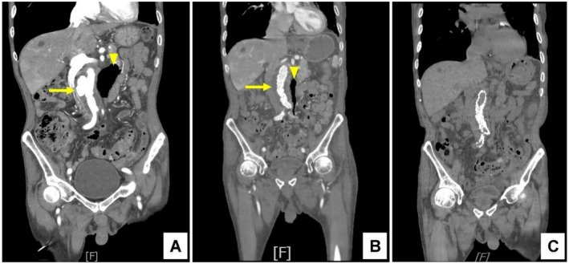
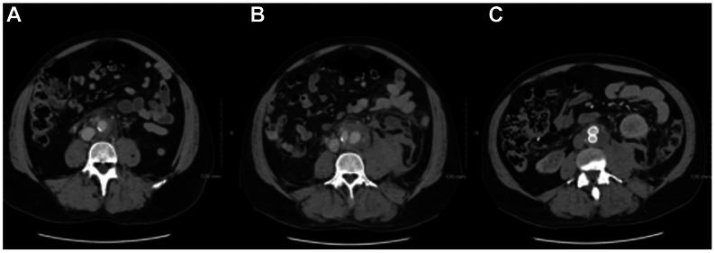

1919 — Phình động mạch chủ bụng nhiễm khuẩn (mycotic / infective native aortic aneurysm): chẩn đoán trên CTA, chẩn đoán phân biệt và khi nào EVAR thay mổ hở
Tags: pattern:phinh-dang-tui pattern:viem-quanh-dong-mach pattern:khi-quanh-dong-mach pattern:tu-dich-sau-phuc-mac pattern:ngam-thuoc-thanh-mach vung:dong-mach-chu-bung vung:o-bung protocol:CTA-3-thi protocol:PET-FDG protocol:cay-mau score:MAGIC incidentaloma:khong
Mức chắc chắn (certainty): tổng hợp y văn (literature synthesis) — ca nguyên văn có ảnh CTA nối tiếp (Clin Case Rep 2026, PMC13093503), ca nguyên văn bị đọc nhầm là lymphoma rồi vỡ sau 3 ngày (J Vasc Surg Cases Innov Tech 2025, PMC12148370), thuật toán 10 năm của đơn vị mạch máu–nhiễm (J Clin Med 2026, PMC12986184), ca EVAR theo dõi 6 năm (Cureus 2024, PMC11302981) và ca sarcoma nội mạc ĐMC giả phình nhiễm (Cureus 2025, PMC12182782). Không có ca do nhóm tự chụp.
Câu hỏi thực hành: nam 76 tuổi, sốt 37,9°C, mệt và đau bụng không đặc hiệu vài ngày, cấy máu ra E. coli, CT bụng có túi phình lệch tâm 3,9 cm dưới động mạch thận kèm đám khí quanh ĐMC và viêm túi thừa sigma. Bác sĩ hỏi: "Đây có phải phình nhiễm khuẩn không? Có khí rồi thì mổ hở hay đặt stent? Kháng sinh bao lâu?" Bài chốt năm quyết định: (1) phình nhiễm khuẩn chỉ chiếm 1–3% mọi phình động mạch nhưng vỡ là biến cố chết người — không được "theo dõi 3 tháng"; (2) hình ảnh chốt là túi lệch tâm + viêm/mỡ quanh ĐMC + khí quanh ĐMC + mất liên tục vôi hóa thành, không phải kích thước; (3) khí quanh mảnh ghép cũ ≠ khí quanh ĐMC nguyên bản — với mảnh ghép phải chờ ≥ 7 tuần, với ĐMC nguyên bản có khí + sốt là nhiễm cho đến khi chứng minh ngược; (4) EVAR + kháng sinh dài hạn kiểm soát được tới ~1/3 phình nhiễm ĐMC nguyên bản, nhưng phình to thêm khi đang dùng kháng sinh là chỉ định can thiệp; (5) kháng sinh 12 tuần đến 12 tháng, ngừng chỉ khi chỉ số viêm bình thường + PET/CT hết ngấm.
1. Tổng quan bệnh học – cơ chế hình ảnh (TẠI SAO)
- Tên gọi sai lịch sử: "mycotic" (Osler) nghĩa là giống nấm, nhưng tác nhân thật gần như luôn là vi khuẩn; thuật ngữ chính xác hiện dùng là infective native aortic aneurysm (INAA). S. aureus là tác nhân đơn loài hay gặp nhất; Salmonella chiếm tới 15% các ca nhiễm khuẩn huyết gieo vào mảng xơ vữa (PMC6903872). Khi có rò động mạch–ruột, cấy thường đa loài (Candida + Enterobacteriaceae) (PMC12986184).
- Tần suất: phình nhiễm khuẩn chiếm 1–3% mọi phình động mạch (PMC12148370); nhiễm mảnh ghép ĐMC (bài 148) chiếm 1–2% ca đặt mảnh ghép (PMC12986184). Đây là hai thực thể khác nhau về tiên lượng và cách theo dõi.
- TẠI SAO thành ĐMC bị phá hủy: vi khuẩn gieo vào vasa vasorum ở lớp ngoài → viêm mủ lớp áo giữa → hoại tử tổ chức đàn hồi và collagen → thành mất sức chịu lực, giãn ra lệch tâm, dạng túi (saccular), bờ không đều, nhiều thùy. Vì mất thành từng ổ chứ không phải giãn đều toàn chu vi, đường kính có thể còn nhỏ (3–4 cm) mà nguy cơ vỡ đã cao — đây là lý do ngưỡng 5,5 cm của phình xơ vữa KHÔNG áp dụng.
- TẠI SAO có khí quanh ĐMC: vi khuẩn sinh hơi + ổ mủ hoại tử tạo bọt khí trong mô quanh mạch. Khí quanh ĐMC nguyên bản (không có mảnh ghép) là dấu hiệu rất đặc hiệu cho nhiễm; khác hẳn khí bẫy lành tính sau đặt stent (bài 148).
- TẠI SAO mất liên tục vôi hóa là dấu hiệu chốt: mảng vôi hóa là phần cứng nhất của thành; viêm mủ phá hủy mô đàn hồi dưới mảng vôi làm mảng tách và biến mất khu trú trên CTA. Một chỗ mất vôi hóa + túi lệch tâm cùng vị trí mạnh hơn nhiều so với "thành dày" đơn thuần.
- TẠI SAO sốt và cấy máu không đủ: bệnh cảnh thường âm ỉ (mệt, đau lưng, gầy sút); cấy máu âm ở một phần đáng kể ca đã dùng kháng sinh trước đó, và không có xét nghiệm nào loại trừ. Chẩn đoán là tổng hợp lâm sàng + cấy máu + hình ảnh, không phải một tiêu chuẩn duy nhất.
- TẠI SAO PET/CT hữu ích nhưng không thay CTA: đại thực bào hoạt hóa quanh ổ nhiễm tăng tiêu thụ FDG → ổ ngấm khu trú, không đồng nhất. Trong nhiễm mạch máu, PET/CT có Se 91%, Sp 72%, độ chính xác 88% (152 ca, PMC10611872 — dân số mảnh ghép); dương tính giả gặp sau mổ, trong mảng xơ vữa viêm, và ở u. Vì vậy PET dùng để định hướng và theo dõi, không phải để chẩn đoán một mình.
- TẠI SAO tiên lượng nặng: nhóm nhiễm mảnh ghép ĐMC không được lấy mảnh ghép có tử vong 70–100% sau 2 năm dù dùng kháng sinh (PMC12986184); với phình nhiễm ĐMC nguyên bản, số liệu tốt hơn nhờ can thiệp sớm — EVAR cho sống 30 ngày 90%, sống 2 năm 82% (Kan, dẫn qua PMC6903872), và một nghiên cứu Thụy Điển cho sống 3 tháng 96% với EVAR so với 74% với mổ hở (dẫn qua PMC6903872).
- Con số quyết định can thiệp: ca của PMC11302981 phình to thêm 13 mm sau 4 tuần kháng sinh — đây là định nghĩa thực hành của thất bại điều trị nội khoa, buộc phải can thiệp dù bệnh nhân "đỡ sốt".
2. Mẫu hình + chẩn đoán phân biệt theo hình thái và vị trí (Gamut)
- Theo hình thái túi phình:
- Dạng túi lệch tâm, nhiều thùy, bờ không đều → nhiễm khuẩn, giả phình sau can thiệp/chấn thương, loét xuyên thành (PAU), sarcoma nội mạc.
- Hình thoi đều, vôi hóa liên tục → phình xơ vữa lành tính; nếu kèm dày thành đồng tâm → viêm ĐMC (Takayasu, GCA, IgG4).
- Túi + mức khí–dịch trong ổ → áp-xe quanh ĐMC; khí trong thành → nhiễm sinh hơi.
- Theo vị trí và cấu trúc lân cận:
- Quanh ĐMC bụng dưới thận + viêm túi thừa/đại tràng → nhiễm lan kế cận (ca PMC13093503).
- Quanh ĐMC + tổn thương đĩa đệm–thân sống (spondylodiscitis) → nhiễm gieo từ xương hoặc lan ngược (ca PMC11046692, PMC11648744).
- Quanh ĐMC + dày ruột non kề, mất lớp mỡ giữa ĐMC và ruột, chảy máu "báo trước" → rò động mạch–ruột (aorto-enteric fistula) — cấp cứu, khác hoàn toàn túi phình đơn thuần.
- Quanh ĐMC + hạch lớn nhiều tầng, không có túi thật → lymphoma (đây chính là bẫy của ca PMC12148370).
- Quanh ĐMC + khối bao quanh, hẹp/tắc các động mạch tạng, KHÔNG viêm quanh mạch → sarcoma nội mạc ĐMC (ca PMC12182782: hẹp SMA, tắc thân tạng).
- Gamut "khối quanh ĐMC" (periaortic mass): nhiễm khuẩn, máu tụ tổ chức hóa, lymphoma, xơ hóa sau phúc mạc, IgG4, sarcoma, di căn hạch, phình giả viêm.
- Mnemonic 4 chữ cho phình nhiễm: Saccular (túi lệch tâm), Stranding (mỡ quanh mạch), Sepsis (sốt/cấy máu), Strange gas (khí quanh ĐMC).
3. Bảng so sánh phân biệt (ma trận đối chiếu)
| Thực thể (entity) | Hình ảnh điển hình (CTA/MRI) | Chốt vào (rule-in) | Chốt loại (rule-out) | Gợi ý xác nhận |
|---|---|---|---|---|
| Phình nhiễm ĐMC nguyên bản (INAA) | Túi lệch tâm, nhiều thùy; mỡ/đám mờ quanh ĐMC; khí quanh ĐMC; mất liên tục vôi hóa; có thể dày thành ngấm thuốc | Sốt + cấy máu dương + túi lệch tâm có viêm/khí quanh mạch | Vôi hóa liên tục, không viêm quanh mạch, không khí và cấy âm nhiều lần → nghĩ lành/tumor | Cấy máu 3 bộ trước kháng sinh; CTA 3 thì lát mỏng; PET/CT khi cấy âm |
| Nhiễm mảnh ghép nội mạch (bài 148) | Dịch/khí quanh mảnh ghép; giả phình miệng nối; bờ dịch dày ngấm thuốc | Khí ≥ 7 tuần hoặc dịch ≥ 3 tháng sau EVAR, khí tăng dần, cấy dương | Khí/dịch sớm < 7 tuần–3 tháng, bờ mỏng, nhỏ dần → sinh lý sau EVAR | MAGIC (chính/phụ × lâm sàng/hình ảnh/xét nghiệm) |
| Giả phình vô khuẩn sau can thiệp | Cổ túi rõ, thành nhẵn, không khí, không thâm nhiễm mỡ | Tiền sử thủ thuật đúng vị trí, không sốt, cấy âm | Khí trong mô quanh mạch + sốt → nhiễm | So phim cũ; theo dõi kích thước |
| Loét xuyên thành (PAU) | Ổ loét trên mảng vôi, lồi ra ngoài, không có khối mềm quanh mạch | Mảng vôi dày + ổ loét + không viêm quanh mạch | Khí quanh mạch + sốt + cấy dương → nhiễm | CTA; đánh giá tụ máu trong thành |
| Viêm ĐMC (Takayasu/GCA/IgG4) | Dày thành đồng tâm, đều, ngấm thuốc, không có túi lệch tâm; hẹp các nhánh | Dày thành đồng tâm + tuổi/bệnh hệ thống phù hợp | Túi lệch tâm + khí → nhiễm | MRI thành mạch, PET/CT, IgG4, sinh thiết |
| Sarcoma nội mạc ĐMC | Khối trong lòng/bao quanh, nhiều thùy, KHÔNG viêm mỡ quanh mạch; hẹp/tắc động mạch tạng; di căn xương | Khối phát triển dù kháng sinh + không có ổ nhiễm | Khí quanh mạch + cấy dương + sốt cao → nhiễm | Sinh thiết/mổ; PET/CT; theo dõi tăng trưởng |
| Lymphoma / xơ hóa sau phúc mạc | Hạch/khối bao quanh nhưng không làm hẹp lòng ĐMC, đồng nhất, không khí | Hạch nhiều tầng + không túi phình | Túi lệch tâm thật + khí → nhiễm | Sinh thiết; PET/CT |

Nam 76 tuổi, E. coli huyết, phình dưới thận 3,9 cm lệch tâm kèm viêm túi thừa sigma. (A) Trước can thiệp: bờ túi không đều (mũi tên vàng) + đám khí quanh ĐMC (đầu mũi tên). (B) Sau PEVAR: túi bị loại khỏi dòng chảy, trở thành lòng giả huyết khối; khí và viêm quanh mạch giảm rõ. (C) Theo dõi: stent ổn định, không rò nội, viêm gần hết. Nguồn: Clin Case Rep 2026 (PMC13093503), Fig. 1, CC BY 4.0.4. Protocol chụp + phân tầng điều trị
- CTA bụng–chậu 3 thì, lát ≤ 1 mm: thì không cản quang (phát hiện vôi hóa, máu trong thành), thì động mạch (bờ lòng, cổ túi, mạch tạng), thì tĩnh mạch/muộn (ngấm thuốc thành, tụ dịch). Dựng MPR coronal/sagittal bắt buộc vì túi lệch tâm dễ bị bỏ sót trên lát ngang.
- Đo và ghi vào báo cáo: đường kính lớn nhất, hình dạng (túi/hình thoi), bờ (đều/nhiều thùy), vôi hóa (liên tục/đứt đoạn), mỡ quanh mạch (mm), khí (có/không), mạch tạng và thận, cột sống kề (tìm spondylodiscitis), ruột kề (tìm rò).
- Cấy máu: 3 bộ trước kháng sinh, càng nhiều bộ càng tăng tỉ lệ dương; cấy mô/ổ mủ khi can thiệp; PCR 16S khi cấy âm mà vẫn nghi (PMC12986184).
- MRI khi có chống chỉ định iod hoặc cần đánh giá tủy/cột sống: T1, T2, T1 sau tiêm fat-sat, DWI; dày thành ngấm thuốc + phù tủy xương kề hỗ trợ nhiễm.
- PET/CT FDG khi cấy âm, khi cần phân biệt nhiễm với phản ứng sau mổ, hoặc theo dõi đáp ứng trước khi ngừng kháng sinh (PMC12986184).
- Tiêu chuẩn MAGIC chỉ dùng cho NHIỄM MẢNH GHÉP (bài 148); ĐMC nguyên bản không có bộ tiêu chuẩn được thẩm định — đừng áp nguyên xi "khí ≥ 7 tuần" cho ĐMC chưa có stent.
- Kháng sinh: khung 12 tuần (6 tuần IV + 6 tuần đường uống có sinh khả dụng tốt) cho ca đã kiểm soát ổ nhiễm; kéo dài 12 tháng hoặc duy trì suốt đời khi không lấy được mảnh ghép/ổ nhiễm. Ngừng khi CRP/ESR bình thường VÀ PET/CT không còn ngấm (PMC12986184).
- Chọn can thiệp: ổn định + giải phẫu thuận lợi → EVAR + kháng sinh (tới ~1/3 phình nhiễm nguyên bản được kiểm soát mà không phải lấy stent về sau); vỡ, rò động mạch–ruột, nhiễm sinh hơi, phình to khi đang kháng sinh, không có túi nội mạch phù hợp → mổ hở lấy ổ nhiễm + tái tạo mạch bằng mạch tự thân/ống ghép sinh học.
flowchart TD
A["Túi phình lệch tâm + sốt/đau lưng"] --> B["CTA 3 thì lát mỏng + 3 bộ cấy máu"]
B --> C{"Có khí quanh ĐMC, mất vôi hóa, viêm quanh mạch?"}
C -->|"Không"| D["Nghĩ phình xơ vữa, PAU, lymphoma, sarcoma — theo dõi/đánh giá lại"]
C -->|"Có"| E["Coi là phình nhiễm cho đến khi chứng minh ngược"]
E --> F{"Vỡ, rò động mạch–ruột, nhiễm sinh hơi, sốc?"}
F -->|"Có"| G["Mổ cấp: lấy ổ nhiễm + tái tạo mạch"]
F -->|"Không"| H["Kháng sinh theo kinh nghiệm, chờ cấy"]
H --> I{"Giải phẫu thuận lợi cho stent và bệnh nhân mổ được?"}
I -->|"Có"| J["EVAR + kháng sinh 12 tuần đến 12 tháng"]
I -->|"Không"| K["Mổ hở có kiểm soát hoặc can thiệp lai"]
J --> L{"Phình to thêm, sốt lại, CRP không giảm sau 2–4 tuần?"}
L -->|"Có"| M["Thất bại nội khoa: chuyển mổ hở hoặc can thiệp lại"]
L -->|"Không"| N["PET/CT + CTA theo dõi; ngừng kháng sinh khi viêm hết"]
5. Biến thể bình thường và cạm bẫy
- Cạm bẫy 1 — đọc "mô mềm quanh ĐMC" thành lymphoma. Ca PMC12148370: CT đầu tiên kết luận "nghi lymphoma" vì có mô quanh ĐMC + hạch; 3 ngày sau phình vỡ. Bài học: ở bệnh nhân có sốt/đau lưng, mô mềm quanh ĐMC phải được đọc là viêm nhiễm cho đến khi loại trừ, và cần CTA có cản quang ngay + cấy máu.
- Cạm bẫy 2 — "kích thước nhỏ nên lành". Túi 3,9 cm vẫn có thể vỡ vì thành mất từng ổ; ngưỡng 5,5 cm dành cho phình xơ vữa, không dành cho phình nhiễm.
- Cạm bẫy 3 — khí sau đặt stent là bình thường. Đừng gọi nhiễm mảnh ghép khi khí < 7 tuần sau EVAR mà không có sốt/tăng dần (bài 148). Ngược lại, khí quanh ĐMC nguyên bản gần như luôn bệnh lý.
- Cạm bẫy 4 — cấy máu âm. Bệnh nhân đã dùng kháng sinh ở tuyến trước thường cấy âm; cấy âm không loại trừ. Lấy máu trước liều kháng sinh kế tiếp, cấy nhiều bộ, và gửi PCR 16S.
- Cạm bẫy 5 — sarcoma nội mạc ĐMC. Khối nhiều thùy không viêm mỡ quanh mạch, kèm hẹp/tắc mạch tạng, không có ổ nhiễm → đừng đặt stent rồi theo dõi như nhiễm; cần mô bệnh (PMC12182782).
- Cạm bẫy 6 — bỏ sót ổ nhiễm thứ hai. Sau khi tìm thấy túi phình, phải soát cột sống, đĩa đệm, túi thừa, đường mật, van tim; bỏ sót ổ nguyên phát làm nhiễm tái phát sau mổ.
- Biến thể bình thường dễ nhầm: hạch quanh ĐMC nhỏ, đều, < 1 cm ở người trẻ; mảng xơ vữa dày gây "dày thành giả"; máu tụ sau phúc mạc cũ có bờ giả túi nhưng không ngấm thuốc, không khí.
6. Tự lượng giá — Blind Quiz (ảnh ngoài, đáp án trong khối chi tiết)
Ca 1 — Nam 76 tuổi, sốt, E. coli huyết, đau bụng không đặc hiệu.
- Câu hỏi: mô tả hình dạng túi, tìm dấu hiệu ngoài lòng mạch; 3 chẩn đoán phân biệt; dấu hiệu nào khiến bạn không thể "theo dõi 3 tháng"?
Bấm để hiện đáp án (findings + chẩn đoán)
- Dấu hiệu: túi lệch tâm, bờ không đều dưới động mạch thận + đám khí quanh ĐMC + mỡ/đám mờ quanh mạch, kèm viêm túi thừa sigma kề bên.
- Chẩn đoán: phình ĐMC nhiễm khuẩn do lan kế cận từ viêm túi thừa — vì vi khuẩn phá hủy lớp áo giữa từng ổ tạo túi lệch tâm, và ổ mủ sinh hơi tạo khí quanh mạch.
- Xử trí trong ca gốc: kháng sinh + PEVAR; theo dõi CTA cho thấy khí và viêm thoái triển.
- Nguồn ảnh: Clin Case Rep 2026 (PMC13093503), Fig. 1, CC BY 4.0.
Ca 2 — Nam 55 tuổi, sốt về đêm, đau bụng; CT đầu tiên được đọc là "nghi lymphoma".

- Câu hỏi: hình A có gì bất thường quanh ĐMC? Nếu bạn là người đọc ca này, bạn thêm hai việc gì ngay hôm đó?
Bấm để hiện đáp án (findings + chẩn đoán)
- Dấu hiệu: (A) mô mềm quanh ĐMC + hạch quanh mạch lan từ ngực dưới xuống chậu — dễ đọc thành lymphoma; (B) 3 ngày sau: phình vỡ ngay trên chỗ chia đôi; (C) 1 tháng sau: khối máu tụ sau phúc mạc nhỏ dần, đậm độ giảm.
- Chẩn đoán: phình ĐMC nhiễm khuẩn do MSSA (cấy máu dương), đã vỡ — vì mô mềm quanh mạch là viêm mủ chứ không phải hạch.
- Hai việc phải làm: (1) cấy máu ngay trước kháng sinh; (2) CTA có cản quang lát mỏng + dựng MPR để tìm túi lệch tâm/khí/mất vôi hóa, thay vì kết luận lymphoma rồi hẹn theo dõi.
- Nguồn ảnh: J Vasc Surg Cases Innov Tech 2025 (PMC12148370), Fig. 1, CC BY-NC-ND 4.0 — nguyên bản, không cắt/ghép.
Bài liên quan chéo
- 100 – Tổng quan hệ Bụng
- 148 – Nhiễm trùng mảnh ghép nội mạch ĐMC: MAGIC, PET/CT & lấy hay giữ mảnh ghép
- 171 – Bóc tách ĐMC bụng & IMH
- 095 – Hẹp/tắc tĩnh mạch trung tâm & lọc máu
- 147 – Sốt kéo dài (FUO) & ổ nhiễm ẩn trong bụng
- 1912 – Phình động mạch tạng (lách/gan/thân tạng/SMA)
Ảnh
1919_phinh-nhiem-khuan_CTA_CCR3-2026-F1.jpg— Clin Case Rep 2026 (PMC13093503), Fig. 1, CC BY 4.0.1919_phinh-nhiem-khuan_CT_CCR-2025-F1.jpg— J Vasc Surg Cases Innov Tech 2025 (PMC12148370), Fig. 1, CC BY-NC-ND 4.0 (nguyên bản).- Không tải ảnh từ PMC11302981 (Cureus, có video) và PMC12986184 (thuật toán dạng hình) — chỉ dẫn số liệu.
- Nguồn + giấy phép từng ảnh:
images/CREDITS.md.
Không dùng để chẩn đoán độc lập khi chưa có người hướng dẫn.